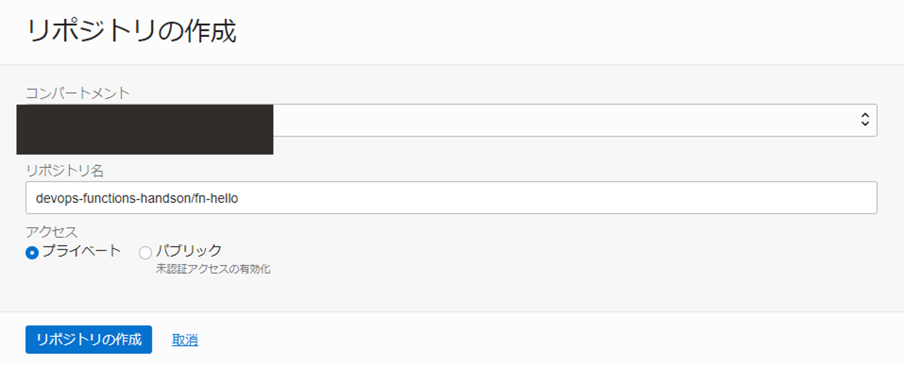
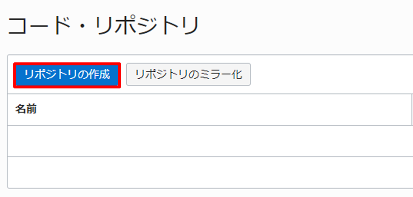
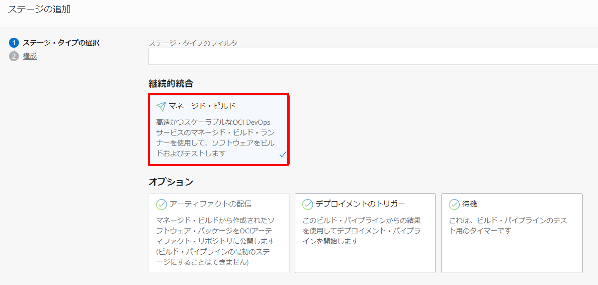
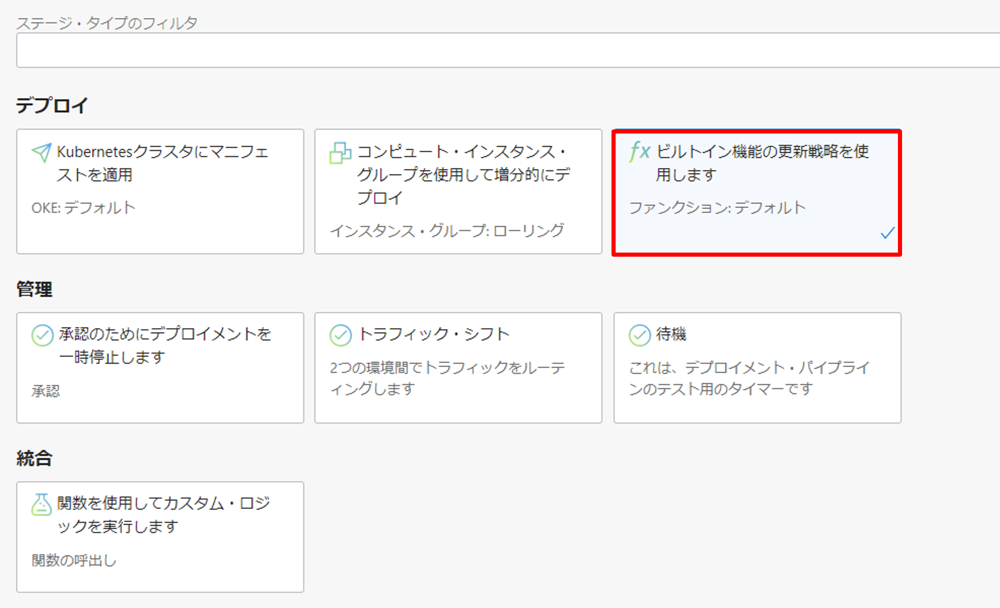
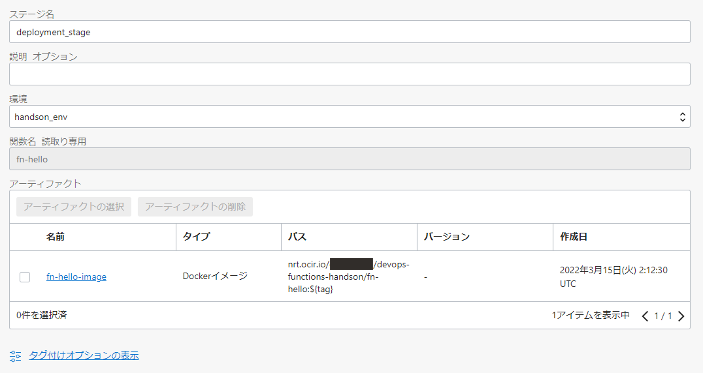

OCI DevOps は、OCI 上に CI/CD 環境を構築するマネージドサービスです。このハンズオンでは、Oracle Functions に対する CI/CD パイプラインの構築手順を記します。
Oracle Functions について
Oracle Functions は、Oracle Cloud Infrastructure(OCI)で提供される、Function as a Service です。詳細は、https://www.oracle.com/jp/cloud-native/functions/ をご確認ください。
前提条件
- 環境
- OCI DevOps事前準備が完了していること
- Oracle Functionsことはじめが完了していること
全体構成
本ハンズオンでは、以下のような環境を構築し、ソースコードの変更が Oracle Functions に自動的に反映されることを確認します。

事前準備の流れ
- 1.OCIR の作成
- 2.ハンズオンに使用する資材のセットアップ
- 3.アプリケーションの動作確認
1.OCIR の作成
Oracle Functions のコンテナイメージの保存先である OCIR(Oracle Cloud Infrastructure Registry)を作成します。OCI Console 左上のハンバーガーメニューから、開発者サービス > コンテナとアーティファクト > コンテナ・レジストリと選択します。

リポジトリの作成を押します。

以下のように入力し、リポジトリを作成します。
- リポジトリ名: devops-functions-handson/fn-hello
- アクセス: プライベート

2.ハンズオンに使用する資材のセットアップ
Cloud Shell を開きます。OCI Console 右上の Cloud Shell を押します。

ハンズオンに使用する資材をダウンロードします。
cd ~; \
wget -O devops-template-for-oracle-functions.zip https://orasejapan.objectstorage.ap-tokyo-1.oci.customer-oci.com/n/orasejapan/b/oci-devops-handson/o/functions%2Fdevops-template-for-oracle-functions.zip
zip を解答します。
unzip functions_devops-template-for-oracle-functions.zip
ダウンロードした資材には以下が含まれています。
.
├── README.md
├── build_spec.yaml
├── fn-hello
│ ├── func.yaml
│ ├── mvnw
│ ├── mvnw.cmd
│ ├── pom.xml
│ ├── src
│ │ ├── main
│ │ │ └── java
│ │ │ └── com
│ │ │ └── example
│ │ │ └── fn
│ │ │ └── HelloFunction.java
└── prepare
└── prepare.sh
3.アプリケーションの動作確認
アプリケーションを手動で Oracle Functions にデプロイして、動作確認をします。まずは、アプリケーションを作成します。
OCI Console 左上のハンバーガーメニューから、開発者サービス > ファンクション > アプリケーションと選択します。

アプリケーションの作成を押します。

以下のように入力し、アプリケーションを作成します。
- 名前: oci-devops-handson-app
- VCN: Oracle Functions ハンズオン - 事前準備で作成済みの VCN
- サブネット: Oracle Functions ハンズオン - 事前準備で作成済みのサブネット
アプリケーションに Function をデプロイします。
cd ~/devops-template-for-oracle-functions/fn-hello; \
fn deploy --app oci-devops-handson-app
デプロイが完了したら、実行します。
fn invoke oci-devops-handson-app fn-hello
以下のように結果が返却されることを確認します。
Hello from Function: 1.0
全体の流れ
- DevOps環境構築
- パイプラインの実行
- デプロイの確認
ここでは、Oracle Functions に対して、CI/CD を実現するためのパイプラインを構築します。
1. DevOps環境構築
ここでは、DevOpsの環境構築を行います。
1-1.ポリシーの作成
ここでは、事前準備に追加で必要となるポリシーの設定を行います。
追加で必要となるポリシーは以下となります。
| ポリシー | 説明 |
|---|---|
| Allow dynamic-group OCI_DevOps_Dynamice_Group to manage functions-family in compartment id コンパートメントOCID | OCI DevOpsがOracle Functionsを管理できるようにするポリシー |
ハンズオン資材に含まれているポリシー設定用のスクリプトを実行します。
chmod +x ./devops-template-for-oracle-functions/prepare/prepare.sh
sh ./devops-template-for-oracle-functions/prepare/prepare.sh
コマンド結果
ocid1.tenancy.oc1..xxxxxxxxxxxxxxxxxxxxxxxxxxxxxxxxxxxxxxxxxxxxxxxxxxxxxxxxxxxx
{
"data": {
"compartment-id": "ocid1.tenancy.oc1..xxxxxxxxxxxxxxxxxxxxxxxxxxxxxxxxxxxxxxxxxxxxxxxxxxxxxxxxxxxx",
"defined-tags": {
"Oracle-Tags": {
"CreatedBy": "oracleidentitycloudservice/xxxxxxxxxxx@xxxxx",
"CreatedOn": "2021-11-18T07:41:50.746Z"
}
},
"description": "OCI_DevOps_Policy",
"freeform-tags": {},
"id": "ocid1.policy.oc1..xxxxxxxxxxxxxxxxxxxxxxxxxxxxxxxxxxxxxxxxxxxxxxxxxxxxxxxxxxxx",
"inactive-status": null,
"lifecycle-state": "ACTIVE",
"name": "OCI_DevOps_Policy",
"statements": [
"Allow dynamic-group OCI_DevOps_Dynamice_Group to manage functions-family in compartment id ocid1.tenancy.oc1..xxxxxxxxxxxxxxxxxxxxxxxxxxxxxxxxxxxxxxxxxxxxxxxxxxxxxxxxxxxx"
],
"time-created": "2021-11-18T07:41:50.880000+00:00",
"version-date": null
},
"etag": "31c9339700c6132a1b6205df041ad52fcf66be51"
}
これでポリシーの設定は完了です。
1-2.コード・リポジトリ の作成
アプリケーションコードのバージョン管理を行うためのリポジトリを作成します。OCI Console 左上のハンバーガーメニューから、開発者サービス > DevOps > プロジェクトと選択します。

事前準備で作成したプロジェクト（oci-devops-handson）を選択します。

コード・リポジトリを選択します。

リポジトリの作成を押します。

以下のように入力し、コード・リポジトリを作成します。
- リポジトリ名: oci-devops-functions-handson

作成したコード・リポジトリ（oci-devops-functions-handson）の詳細画面でクローンを押します。

クローンするための URL をコピーします。

作成した空リポジトリをクローンします。（リポジトリの URL はコピーした URL に置き換えてください）
cd ~; \
git clone <repository-url>
次に、ハンズオンに使用する資材の取得でダウンロードしたハンズオン資材をコピーします。
cd ~; \
cp -r devops-template-for-oracle-functions/* oci-devops-functions-handson
コード・リポジトリ（oci-devops-functions-handson）にコピーした内容をプッシュします。
cd ~/oci-devops-functions-handson; \
git add .; \
git commit -m "Initial commit"; \
git push -u origin main
Git の資格情報を求められた場合
以下のような文字列が出力された場合は、DevOps ことはじめ - oci-devops-handson リポジトリのユーザ名とパスワードの取得を参考に資格情報を入力してください。
Username for 'https://devops.scmservice.ap-tokyo-1.oci.oraclecloud.com'
作成したコード・リポジトリ（oci-devops-functions-handson）の詳細画面で以下のようになっていれば、コード・リポジトリのセットアップは完了です。

1-3.ビルド・パイプラインの作成
作成した DevOps プロジェクト（oci-devops-handson）の詳細画面でビルド・パイプラインを選択します。

ビルド・パイプラインの作成を押します。

以下のように入力し、ビルド・パイプラインを作成します。
- 名前: build_pipeline

ステータスがアクティブとなった作成したビルド・パイプラインをクリックします。

ステージの追加ボタンを押します。

ステージ・タイプの選択で、マネージド・ビルドを選択し、次を押します。

構成で、以下のように入力し追加をクリックします。（指定のない項目は、デフォルトのまま進めてください）
- ステージ名: build_stage
- ビルド仕様ファイル・パス: build_spec.yaml
- プライマリ・コード・リポジトリ
- 接続タイプ: OCI コード・リポジトリ
- oci-devops-functions-handson を選択
- ブランチの選択: main
- ソース名の作成: main

次に、+アイコンを押し、ステージの追加を押します。

ステージ・タイプの選択で、アーティファクトの配信を選択し、次を押します。

構成で以下のように入力し、追加をクリックします。（指定のない項目は、デフォルトのまま進めてください）
- ステージ名: deliver_artifact
- アーティファクトの作成
- 名前: fn-hello-image
- タイプ: コンテナ・イメージ・リポジトリ
- コンテナレジストリの完全修飾パス: <region>.ocir.io/<object-storage-namespace>/devops-functions-handson/fn-hello:${tag}
- パラメーターの置き換え: はい、プレースホルダーを置き換えます
- ビルド構成/結果アーティファクト名: fn-hello-image

1-4.環境の作成
ビルド・パイプラインで生成されたアーティファクトの配布先（=環境）を作成します。 まずは、作成した DevOps プロジェクト（oci-devops-handson）の詳細画面で環境を選択します。

環境の作成を押します。

基本情報で以下のように入力します。
- 環境タイプ: ファンクション
- 名前: handson_env

環境詳細で以下のように入力し、環境を作成します。（指定のない項目は、デフォルトのまま進めてください）
- アプリケーション: oci-devops-handson-app
- ファンクション: fn-hello
1-5.デプロイメント・パイプラインの作成
作成した DevOps プロジェクト（oci-devops-handson）の詳細画面でデプロイメント・パイプラインを選択します。

パイプラインの作成を押します。

以下のように入力し、パイプラインを作成します。
- パイプライン名: deployment_pipeline

ステージの追加を押します。
タイプの選択で、ビルトイン機能の更新戦略を使用します選択します。

構成で以下のように入力し、ステージを作成します。
- ステージ名: deployment_stage
- 環境: handson_env
- アーティファクトの選択: fn-hello-image

1-6.ビルド・パイプラインとデプロイメント・パイプラインの連携設定
ビルド・パイプラインとデプロイメント・パイプラインの連携設定を行います。作成した DevOps プロジェクト（oci-devops-handson）の詳細画面でビルド・パイプラインを選択します。
作成済みのビルド・パイプライン（build_pipeline）を選択します。deliver_artifact に対して、ステージの追加を選択します。

ステージ・タイプの選択でデプロイメントのトリガーを選択します。

構成で以下のように入力し、追加をクリックします。
- ステージ名: connect_deployment_pipeline
- デプロイメント・パイプラインの選択: deployment_pipeline

1-7.トリガーの作成
ビルド・パイプラインを実行するためのトリガーを作成します。作成した DevOps プロジェクト（oci-devops-handson）の詳細画面でトリガーを選択します。

トリガーの作成を押します。

以下のように入力し、作成をクリックします。（指定のない項目は、デフォルトのまま進めてください）
- 名前: build_pipeline_trigger
- ソース接続: OCI コード・リポジトリ
- コード・リポジトリの選択: oci-devops-functions-handson
- アクションの追加
- ビルド・パイプラインの選択: build_pipeline
- イベント: push

2.パイプラインの実行
前の手順までで、アプリケーションコードに対する変更がコード・リポジトリの更新（git push）をトリガーとし自動的に Oracle Functions へ反映される CI/CD パイプラインの構築ができたので、実際にソースコードを修正しコード・リポジトリにその変更を反映したいと思います。
まずは、アプリケーションコードを変更します。
cd ~/oci-devops-functions-handson/; \
vim fn-hello/src/main/java/com/example/fn/HelloFunction.java
以下のように変更します。
package com.example.fn;
public class HelloFunction {
public String handleRequest() {
System.out.println("Inside Java Hello World function");
return "Hello from Function: 2.0"; // 1.0 から 2.0 へ変更
}
}
続いて、テストコードも同様に変更します。
vim fn-hello/src/test/java/com/example/fn/HelloFunctionTest.java
以下のように変更します。
package com.example.fn;
import com.fnproject.fn.testing.*;
import org.junit.*;
import static org.junit.Assert.*;
public class HelloFunctionTest {
@Rule
public final FnTestingRule testing = FnTestingRule.createDefault();
@Test
public void shouldReturnGreeting() {
testing.givenEvent().enqueue();
testing.thenRun(HelloFunction.class, "handleRequest");
FnResult result = testing.getOnlyResult();
assertEquals("Hello from Function: 2.0", result.getBodyAsString()); // 1.0 から 2.0 へ変更
}
}
変更分をコード・リポジトリに反映します。
git add fn-hello/*; \
git commit -m "Bump version from 1.0 to 2.0"; \
git push -u origin main
DevOps 上のビルド履歴から、ビルド・パイプラインが実行されている事が確認できます。

3.デプロイの確認
デプロイメント・パイプラインの成功が確認できた後に、Oracle Functions に変更が反映されているかどうかを確認してみましょう。
fn invoke oci-devops-handson-app fn-hello
変更内容が取り込まれていることが確認できました！
Hello from Function: 2.0
4.【オプション】ビルド構成ファイルの解説
ここでは、ハンズオンの中で利用したビルド構成ファイル(build_spec.yaml)の解説を行います。
今回のハンズオンでは、サンプルアプリケーションの中に予めビルド構成ファイル(build_spec.yaml)を用意していました。
このファイルは、OCI DevOpsでビルドステップを定義する際に必ず必要になるファイルです。
ハンズオンの中では、1-3.ビルド・パイプラインの作成内の手順で利用しました。
ファイルは以下のようになっています。
version: 0.1
component: build
timeoutInSeconds: 10000
shell: bash
env:
variables:
function_name: fn-hello
function_version: 0.0.3
exportedVariables:
- tag
steps:
- type: Command
name: "Docker image build"
timeoutInSeconds: 4000
command: |
cd fn-hello
fn build
docker tag ${function_name}:${function_version} ${function_name}
tag=`echo ${OCI_BUILD_RUN_ID} | rev | cut -c 1-7`
onFailure:
- type: Command
command: |
echo "Failure successfully handled"
timeoutInSeconds: 60
outputArtifacts:
- name: fn-hello-image
type: DOCKER_IMAGE
location: fn-hello
今回はビルドステップ内で行うタスクは1つだけになっており、
steps:
- type: Command
name: "Docker image build"
timeoutInSeconds: 4000
command: |
cd fn-hello
fn build
docker tag ${function_name}:${function_version} ${function_name}
tag=`echo ${OCI_BUILD_RUN_ID} | rev | cut -c 1-7`
onFailure:
- type: Command
command: |
echo "Failure successfully handled"
timeoutInSeconds: 60
の部分で定義しています。
このステップでは、主にfn buildコマンドによるFunctions(コンテナイメージ)のビルドとタグ付けをおこなっています。
このビルドステップでビルドされた成果物(コンテナイメージ)を
outputArtifacts:
- name: fn-hello-image
type: DOCKER_IMAGE
location: fn-hello
の部分でfn-hello-imageという名前のコンテナイメージ(type: DOCKER_IMAGE)として出力しています。
このfn-hello-imageという成果物を1-3.ビルド・パイプラインの作成の手順内のビルド構成/結果アーティファクト名で指定し、アーティファクト・レポジトリにアップロードしました。
以上で、ビルド構成ファイル(build_spec.yaml)の解説は終了です。
ビルド構成ファイルについて
ビルド構成ファイルの詳細については、こちらのドキュメントをご確認ください。